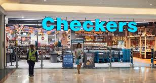

CHECKERS
Checkers Hyper stores are typically located in densely populated areas. It is a large-format, wider-range store with similar products to Checkers, catering for upper-income groups. There are over 30 stores that boast an extensive range of products ranging from a variety of fresh and frozen foods, household items, indoor and outdoor furniture, and clothing, to a large range of branded appliances and audiovisual products at the Group’s TechX departments
Click here to go to supermarkets page